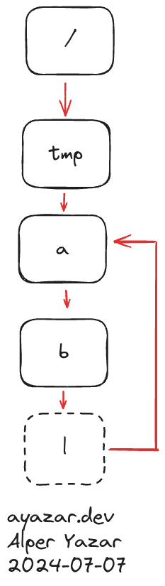

Soft Link ve Hard Link Kavramları
Linux üzerinde dosyalarla çalışırken karşılacağımız kavramlardan biri de soft link ve hard link kavramıdır. Şimdi bunların ne olduğuna bir bakalım.
Her ikisini de aslında birer kısayol gibi düşünebiliriz. Windows kullanıyorsanız masaüstünde bulunan kısayollar yani shortcut dediğimiz şeyler, kenarlarında bir ok sembolü olur, Linux’taki soft/hard link kavramına benzer.
Linux’ta iki tip kısayol, link, vardır: soft ve hard. Benzer amaçlara hizmet etselerde implement edilme şekilleri farklıdır.
Hard Link
İlk olarak hard link kavramından bahsetmek istiyorum. Linux sistemimizde bir çalışma klasörü oluşturup içine gidip birkaç dosya oluşturalım:
$ touch a b c
$ ls -l
total 0
-rw-r--r-- 1 ay ay 0 Jul 7 09:40 a
-rw-r--r-- 1 ay ay 0 Jul 7 09:40 b
-rw-r--r-- 1 ay ay 0 Jul 7 09:40 c
Burada a, b ve c isimli birer dosya oluşturduk ve ls ile listeledik.
rwx kısmından yani izin kısmından sonra tüm dosyalarda 1 yazmaktadır. İşte
ls in gösterdiği bu sayı o dosyaya verilen hard link sayısıdır.
İlk olarak bir hard link oluşturup, örnek üzerinden anlamaya çalışalım.
$ ln a d
ln kabuk komutu bizim hard link oluşturmamızı sağlamaktadır. Aynı komutu
başkaşekilde kullanarak birazdan soft link de oluşturacağız. ln <hedef> <link adı> şeklinde bir kullanımı vardır. Biz burada var olan a dosyasını gösteren
d isimli bir link oluşturduk.
$ ls -l
total 0
-rw-r--r-- 2 ay ay 0 Jul 7 09:40 a
-rw-r--r-- 1 ay ay 0 Jul 7 09:40 b
-rw-r--r-- 1 ay ay 0 Jul 7 09:40 c
-rw-r--r-- 2 ay ay 0 Jul 7 09:40 d
Şimdi ls çıktısı biraz değişti. İlk olarak d isimli bir dosya geldi. En
başındaki - karakteri bunun sıradan bir dosya olduğunu sölüyor, yani
diğerlerinden bir farkı yok. a ve d nin hard link sayıları da 1 değil artık
2 oldu. Şimdi a dosyasına bir şeyler yazalım.
$ echo "Ben a dosyasıyım" > a
$ ls -l
total 8
-rw-r--r-- 2 ay ay 19 Jul 7 09:48 a
-rw-r--r-- 1 ay ay 0 Jul 7 09:40 b
-rw-r--r-- 1 ay ay 0 Jul 7 09:40 c
-rw-r--r-- 2 ay ay 19 Jul 7 09:48 d
a dosyasına bir satır yazı yazdık ve ls ile tekrar baktık. a nın boyutu
artık 0 byte değil 19 byte oldu. Ayrıca a nın değiştirilme tarihi artık 9:40
değil, 9:48 oldu. Peki bir şey ilginizi çekti mi? Aynı meta data lar d de
yazıyor. d nin de boyutu ve tarihi aynı oldu.
ay@400:~/sys $ cat d
Ben a dosyasıyım
ay@400:~/sys $ echo "Ben d dosyasıyım" > d
ay@400:~/sys $ cat d
Ben d dosyasıyım
ay@400:~/sys $ cat a
Ben d dosyasıyım
d dosyasını bastırdığımız zaman da a nın içeriğini gördük. d ye bir şey
yazarsak da a yı okuduğumuz zaman aynı yazıyı görüyoruz. Yani bunlar
birbirinin aynısı mı? inode numaralarına bakalım mı?
ay@400:~/sys $ ls -li
total 8
391711 -rw-r--r-- 2 ay ay 19 Jul 7 09:50 a
391713 -rw-r--r-- 1 ay ay 0 Jul 7 09:40 b
391714 -rw-r--r-- 1 ay ay 0 Jul 7 09:40 c
391711 -rw-r--r-- 2 ay ay 19 Jul 7 09:50 d
Hem a hem de d nin inode sayıları aynı. Peki bu ne demek? Bir dosya
sisteminde dosya ve dizinler ile o dosya sisteminde inode numaraları arasında
bire bir ve tekil bir eşleşme olduğundan bahsetmiştik. Yani a ve d aslında
aynı dosyayı gösteriyor.
Hatırlarsanız dizinlerin aslında dosya adı-inode çiftlerini tuttuğunu
söylemiştik. İşte bu durumda da olan aslında bu. Çalıştığım dizin içerisinde
aslında aynı inode’a yani aynı dosyaya referans veren iki isim var, a ve d.
a 391711
b 391713
c 391714
d 391711
gibi bir kayıt var aslında. Bunları birer pointer gibi düşünebiliriz.
inode içerisinde de aslında o inode’a kaç farklı yerden referans verildiğini
tutan bir hard link counter bulunmaktadır. Sıradan bir dosyayı yarattığımızda
bu değer 1 olmaktadır. Fakat biz burada 391711 numaralı inode’a hem a hem
d ismiyle ulaşabildiğimiz için sayı 2’dir.
Aynı dosya sisteminde kalmak şartı ile başka yerlerden de hard link oluşturabiliriz.
ay@400:~/sys $ mkdir -p x/y/z
ay@400:~/sys $ cd x/y/z/
ay@400:~/sys/x/y/z $ ln ../../../d e
ay@400:~/sys/x/y/z $ ls -li
total 4
391711 -rw-r--r-- 3 ay ay 19 Jul 7 09:50 e
ay@400:~/sys/x/y/z $ cd ../../..
ay@400:~/sys $ ls -li
total 12
391711 -rw-r--r-- 3 ay ay 19 Jul 7 09:50 a
391713 -rw-r--r-- 1 ay ay 0 Jul 7 09:40 b
391714 -rw-r--r-- 1 ay ay 0 Jul 7 09:40 c
391711 -rw-r--r-- 3 ay ay 19 Jul 7 09:50 d
391783 drwxr-xr-x 3 ay ay 4096 Jul 7 09:59 x
Örneğin yukarıdaki örnekte x/y/z şeklinde başka dizinler oluşturup, en alttaki
dizinden aynı inode’a bir hard link daha oluşturdum. Bu durumda hard link sayısı
3’e çıktı.
ay@400:~/sys $ rm a
ay@400:~/sys $ cat d
Ben d dosyasıyım
ay@400:~/sys $ cat x/y/z/e
Ben d dosyasıyım
ay@400:~/sys $ ls -li d
391711 -rw-r--r-- 2 ay ay 19 Jul 7 09:50 d
Yukarıda a yı sildim. Fakat d ve x/y/z/e aynı inode’u gösterdiği için
aslında dosyanın kendisi silinmedi ve cat ile içeriğine bakabildim.
Mesela find komutu ile değerini bildiğimiz bir inode’a link veren dosyaları
dosya sistemimizde bulabiliriz:
$ find / -inum 391711 2>/dev/null
/home/ay/sys/x/y/z/e
/home/ay/sys/d
Bizim dosyamıza referans veren 2 yer varmış. Sondaki 2>/dev/null kısmı kafa
karıştırmasın, hata mesajlarını (permission denied) bastırmak için var, önemli
değil.
Biz bir hard link oluşturduğumuz zaman bu yeni link yeni bir inode yani dosya oluşmasına sebep olmamaktadır. Sadece zaten var olan bir dosyaya yani inode’a yeni bir isim veriyoruz. Dosya konusunun en başında dosya isimlerinin, inode’un bir parçası olmaması belki garip gelmiştir. Ama isim ile inode’u yani dosyanın kendisini ayırdığımız zaman işte bu tarz esnekliklerimiz oluyor. Aynı inode’a referans veren başka isimler oluşturabiliyoruz. Ayni inode demek, sevabıyla günahıyla aynı dosya demek, meta data kısmı ve içeriği.
Kısıtlamalar
Hard link kullanımının da çeşitli kısıtlamaları vardır.
Hard linkler, aynı inode’a referanslar vererek oluşturulurlar. Olmayan bir dosyaya hard link oluşturamazsınız.
ay@400:~/sys $ ls -l
total 8
-rw-r--r-- 1 ay ay 0 Jul 7 09:40 b
-rw-r--r-- 1 ay ay 0 Jul 7 09:40 c
-rw-r--r-- 2 ay ay 19 Jul 7 09:50 d
drwxr-xr-x 3 ay ay 4096 Jul 7 09:59 x
ay@400:~/sys $ ln e f
ln: failed to access 'e': No such file or directory
Örneğin burada e dosyasına link oluşturmak istedik fakat yapamadık çünkü e
dosyası yok. Yani e ismine karşılık gelen bir inode yok. Bu durumda hard link
oluşturamadık.
Farklı dosya sistemleri arasında hard link oluşturamayız.
Linux, Windows’tan farklı olarak bize tek bir dosya sistemi sunuyormuş gibi
durabiliyor. Yani birden fazla diskimiz, dosya sistemimiz olsa bile bunlarında
hepsi / altında bir yerlere mount edilmiş durumda. Linux’ta, Windows’taki gibi
her diske özel ayrı tree yapıları yok, C, D, E gibi. Ama bu demek değil
ki Linux’ta her şey yapılabiliyor. Farklı dosya sistemleri aynı ağaç altında
gözükse de dosya sistemleri arasında hard link oluşturmak mümkün değil. Peki
neden?
Hard linklerin aslında var olan bir inode’a referans olduğundan bahsetmiştik.
inode’lar tekildir fakat dosya sistemi içerisinde tekildir. İki farklı dosya
sisteminde aynı inode sayısı bambaşka dosyaları gösterebilir. inode değeri o
dosya sistemi içerisinde bir referanstır. Hatırlarsanız dosya adı - inode
çiftleri vardı. Burada “şu dosya sisteminin inode’u” gibi bir alan yok. O yüzden
sadece var olan dosya sistemi içerisinde hard link oluşturabiliriz, dosya
sistemleri arasında oluşturamayız. Bir demo yapalım:
ay@400:~/sys $ dd if=/dev/zero of=1.img bs=1M count=16
ay@400:~/sys $ dd if=/dev/zero of=2.img bs=1M count=16
ay@400:~/sys $ ls -l *.img
-rw-r--r-- 1 ay ay 16777216 Jul 7 10:19 1.img
-rw-r--r-- 1 ay ay 16777216 Jul 7 10:19 2.img
ay@400:~/sys $ mkfs.ext4 1.img
ay@400:~/sys $ mkfs.ext4 2.img
ay@400:~/sys $ mkdir 1 2
ay@400:~/sys $ sudo mount -o loop 1.img ./1
ay@400:~/sys $ sudo mount -o loop 2.img ./2
ay@400:~/sys $ ls -lh
total 2.5M
drwxr-xr-x 3 root root 1.0K Jul 7 10:20 1
-rw-r--r-- 1 ay ay 16M Jul 7 10:20 1.img
drwxr-xr-x 3 root root 1.0K Jul 7 10:20 2
-rw-r--r-- 1 ay ay 16M Jul 7 10:20 2.img
-rw-r--r-- 1 ay ay 0 Jul 7 09:40 b
-rw-r--r-- 1 ay ay 0 Jul 7 09:40 c
-rw-r--r-- 2 ay ay 19 Jul 7 09:50 d
drwxr-xr-x 3 ay ay 4.0K Jul 7 09:59 x
ay@400:~/sys $ cd 1
ay@400:~/sys/1 $ sudo touch i
ay@400:~/sys/1 $ cd ..
ay@400:~/sys $ cd 2
ay@400:~/sys/2 $ sudo ln ../1/i j
ln: failed to create hard link 'j' => '../1/i': Invalid cross-device link
Yukarıda sanal olarak iki adet 16 MB disk oluşturdum, ikisini de ext4 olarak
formatlayıp mount ettim. Fakat iki farklı dosya sistemi arasında hard link
oluşturmaya çalıştığım zaman Invalid cross-device link hatası aldım. Yani
farklı dosya sistemleri arasında hard link yapamıyoruz. Gerçi POSIX standartına
göre bunun olabileceği söyleniyor ama Linux buna izin vermiyor. [1]
Dizinlere hard link verilemez.
ay@400:~/sys $ mkdir dizin
ay@400:~/sys $ ln dizin link
ln: dizin: hard link not allowed for directory
Gördüğünüz üzere hard link not allowed for directory. Bunu sudo ile yapsanız
da olmuyor, eskiden sistemler root a bu yetkiyi veriyorlarmış ama “tehlikeli”
olabileceği için şu an herkese yasak diyebiliriz. [1] [2] Peki ama neden
tehlikeli?
Bir dizine hard link verilmesinin oluşturacağı risk, dosya sisteminde sonsuz
döngüler yani loop yaratma ihtimalidir. Linux üzerinde dosya sistemleri, birer
ağaç yani tree veri yapısına benzer. En tepede / olmak üzere dizin ve dosyalar
aşağıya doğru dallanır. Ağaç veri yapısının en önemli özelliklerinden biri de
içerisinde loop bulundurmamasıdır. Şu örneğe bir bakalım: [3]
mkdir -p /tmp/a/b
cd /tmp/a/b
ln -d /tmp/a l
Şöyle görselleştirebiliriz:

Örnekte l, tekrar a yı gösteren bir hard link
Diyelim ki bu kısmı gezmek istiyorsunuz, /tmp/a/b ye gittiniz bir klasör
gördünüz, l. cd ile ona geçtiniz ve ls dediniz. Aslında a ya gitmiş
oldunuz ve b yi gördünüz, /tmp/a/b/l/b/l/b/l bu şekilde sonsuza kadar
gidebilirsiniz. Tabi diyebilirsiniz ki kernel bunu tespit edemez mi? Yani loop
durumu kernel tarafından bulunamaz mı? Teknik olarak bulunabilir. Fakat bu
maliyetli bir işlem olacaktır. Kernelin sürekli geçilen path’lerin inode
bilgilerini tutması gerekir ki loop olduğunu anlasın. Linux veya herhangi bir
işletim sisteminde dosya işlemleri oldukça büyük yer tutmaktadır. Burasının
olabildiğince performanslı olması istenir. Kernelin sürekli ve çok çok nadir
olacak bir loop durumu için sürekli “Acaba loop içerisinde miyiz?” diye bakması
oldukça verimsiz olacaktır. O yüzden kernel tarafında bildiğim kadarıyla bir
loop tespiti yapılmamaktadır. Soft link kısmında değineceğiz, ELOOP isminde
bir hata var. Diyebilirsiniz ki “Kernel bu kontrolü yapmıyorsa ELOOP hatası
nasıl oluşturuluyor?”, buna geleceğiz.
Dosyalar arası hard link oluşturmak, tree yapısını bir miktar değiştiriyor. Yani veri yapılarında bildiğimiz klasik tree yapısından biraz uzaklaşıyoruz. Çünkü hard link sayesinde bir daldan diğerine doğrudan atlayabiliyoruz. Fakat dosyaları tree içerisinde leaf node olarak düşünürsek hard link dediğimiz şey bir leaf node’tan diğerine geçişimizi sağlıyor. Hep leaf node’lar arasında geçiş yaptığımız için, daha üst bir seviyeye yani bir dizine çıkamıyoruz. Böylece loop oluşturmamış oluyoruz.
Ayrıca find ya da ls gibi birçok program, dosya sisteminde sonsuz döngülerin
olmadığını düşünmektedir. Elbette loop detection kısmı, user space tarafında da
yapılabilir. Ama bu programlar bu şekilde tasarlanmamışlardır.
Dosya sisteminin bir özelliği de bir dizinin yalnızca bir üst yani parent dizini olmasıdır. Dizinlere hard link oluşturduğumuz zaman bu özellik bozulacaktır. Üstteki örnekten devam edelim.
Diyelim ki /tmp/a/b nin içindeyiz, bunun parent’ı /tmp/a olmaktadır. Eğer
/tmp/a/b/l/b içine girersek bunun parent’ı ise /tmp/a/b/l olmaktadır. Fakat
biz aslında yine /tmp/a/b ye geldik. E o zaman bu dizinin iki parent’ı var:
/tmp/a ve /tmp/a/b/l. Bunu devam ettirirsek aslında sonsuz sayıda parent
oluşmaktadır.
Bunun gibi çeşitli sorunlardan dolayı dizinlere hard link verilmesi Linux
sistemlerde izin verilmemektedir, root kullanıcı dahil.
Peki dizinlere hiç mi link oluşturamayız? Bunu yapabiliyoruz ama onun için soft link konusunu incelememiz lazım. Hard link konusu kabaca böyle, şimdi soft link konusuna bakalım.
Soft Link (Symlink)
Soft link, symlink olarak da bilinmektedir. Çalışma dizinimizi temizleyip, soft link için bir ortam oluşturalım.
ay@400:~/sys $ touch a
ay@400:~/sys $ ln -s a b
ln komutunu hard link oluşturmak için kullanmıştık. Eğer -s seçeneği ile
kullanırsak bu sefer bize soft link oluşturacaktır. Burada b, bir soft link
olmuştur.
ay@400:~/sys $ ls -li
total 0
391711 -rw-r--r-- 1 ay ay 0 Jul 7 14:29 a
391713 lrwxrwxrwx 1 ay ay 1 Jul 7 14:29 b -> a
ls ile baktığımız zaman ls, b yi adeta bir pointer gibi gösteriyor, ->
ile. Hard linkten bağımsız olarak a ve b nin inode numaraları ve izinleri
farklı. Yani b adeta ayrı bir dosya. Fakat tür olarak - yani sıradan bir
dosya değil, l yani link türünden bir dosya. Şimdi a ya bir şeyler yazıp
okumaya çalışalım.
ay@400:~/sys $ echo "Ben a yım" > a
ay@400:~/sys $ cat b
Ben a yım
ay@400:~/sys $ echo "Ben b yim" > b
ay@400:~/sys $ cat a
Ben b yim
ay@400:~/sys $ ls -li
total 4
391711 -rw-r--r-- 1 ay ay 10 Jul 7 14:32 a
391713 lrwxrwxrwx 1 ay ay 1 Jul 7 14:29 b -> a
Her ne kadar ayrı dosyalar gibi dursalar da a ya yazdığımızı b den, b ye
yazdığımızı a dan okuyabiliyoruz. a ya bir yazı yazdığımız zaman a nın
boyutu 10 oldu ve değiştirilme saati 14:32 olarak güncellendi. Oysa b ye
bir şeyler yazdık, değiştirilme saati güncellenmedi. Aynı zamanda boyutu da 1
olarak gözüküyor.
Soft linkler, aslında tek başlarına birer dosyalardır. Kendilerine ait bir
inode’ları vardır. b yi bir metin belgesi gibi düşünün, içinde a yazıyor,
normal metin gibi. Fakat dosyanın türü - değil, l olduğu için kernel bu a
içeriğini symlink olarak yorumluyor. Yani b ye bir şey yazmak istediğimizde ya
da okuduğumuzda önce a yı görüyor kernel, sonra gidip a yı buluyor ve
işlemleri a üzerinden yapıyor. Elbette a da bir symlink olabilirdi, bu sefer
de onun içeriğini takip edecekti.
ay@400:~/sys $ ln -s b c
ay@400:~/sys $ echo "Ben a yım" > a
ay@400:~/sys $ ls -li
total 4
391711 -rw-r--r-- 1 ay ay 11 Jul 7 14:43 a
391713 lrwxrwxrwx 1 ay ay 1 Jul 7 14:29 b -> a
395113 lrwxrwxrwx 1 ay ay 1 Jul 7 14:42 c -> b
ay@400:~/sys $ cat c
Ben a yım
Mesela burada c, b yi gösteren bir symlink, b ise a yı gösteren bir
symlink. c yi yazdırdığımızda yine a nın içeriğini görüyoruz.
Şimdi farklı bir şey deneyelim:
ay@400:~/sys $ ln -s d e
ay@400:~/sys $ ln -s e d
ay@400:~/sys $ ls -li
total 4
391711 -rw-r--r-- 1 ay ay 11 Jul 7 14:43 a
391713 lrwxrwxrwx 1 ay ay 1 Jul 7 14:29 b -> a
395113 lrwxrwxrwx 1 ay ay 1 Jul 7 14:42 c -> b
395127 lrwxrwxrwx 1 ay ay 1 Jul 7 14:45 d -> e
395126 lrwxrwxrwx 1 ay ay 1 Jul 7 14:45 e -> d
ay@400:~/sys $ cat d
cat: d: Too many levels of symbolic links
İlk olarak ln -s d e komutu ile d yi gösteren e isimli bir symlink
oluşturdum. Dikkat ederseniz d diye bir dosyamız yok. Bu durumda hard link
hata veriyordu çünkü olmayan bir inode’a referans veremiyorduk. Soft link’te
durum böyle değil. Soft linklerin içinde aslında dosya adı açık açık yazdığından
içinde d yazan e isimli bir symlink oluşturabildim. ln -s e d ile de d
nin e yi göstermesini sağladım, yani babalar gibi bir loop yaptım. Sonra cat d dedim, bakalım ne olacak. Hemen bana çok fazla symlink var dedi. Yani
loop’u kırabildi.
Peki bunu nasıl yaptı?
Kendi kodumuzu yazdığımız zaman bunu daha iyi anlayacağız ama kernel symlinkleri
takip ederken kaç adet symlink takip ettiğini sayıyor. Ama takip ettiği şey
hangi symlinkleri geçtiği değil, kaç adet symlink geçtiği. Burada bir eşik değer
var, N diyelim. Eğer bir dosyaya ulaşana kadar N den fazla symlink geçerse
artık takip etmeyi bırakıyor ve ELOOP hatası dönüyor, yani bir loopta olduğunu
düşünüyor. Eğer siz loop olmasa bile birbirini takip eden symlinkler
oluşturursanız ve derinliği N yi geçerse yine aynı hatayı verecektir. Bu N
sayısına sonra bakacağız ama mantık bu, pratikte karşılaşmayacağımız kadar
yüksek bir sayı. Bundan daha fazla symlink gezersem bu loop olmalı diyor,
dolaylı olarak.
rm b ya da unlink b diyerek sembolik bağlantıyı kaldırabiliriz, orijinal
dosya silinmeyecektir.
Hard linkerin aksine symlink’ler yani soft link’ler dizinlere verilebilir.
ay@400:~/sys $ mkdir dizin
ay@400:~/sys $ ln -s dizin link
ay@400:~/sys $ ls -li
total 4
391711 drwxr-xr-x 2 ay ay 4096 Jul 7 15:06 dizin
391713 lrwxrwxrwx 1 ay ay 5 Jul 7 15:06 link -> dizin
Burada görüldüğü gibi link, dizin i göstermektedir. link isimli symlink’in
boyutu 5 byte’tır. Çünkü içinde gerçekten de metin olarak dizin yazmaktadır.
ay@400:~/sys $ mkdir uzunbirdosyaveyadizin
ay@400:~/sys $ ln -s uzunbirdosyaveyadizin l
ay@400:~/sys $ ls -li
total 8
391711 drwxr-xr-x 2 ay ay 4096 Jul 7 15:06 dizin
395118 lrwxrwxrwx 1 ay ay 21 Jul 7 15:06 l -> uzunbirdosyaveyadizin
391713 lrwxrwxrwx 1 ay ay 5 Jul 7 15:06 link -> dizin
395113 drwxr-xr-x 2 ay ay 4096 Jul 7 15:06 uzunbirdosyaveyadizin
Mesela burada l nin boyutu ise 21 byte’tır, çünkü gösterdiği yerin ismi 21
karakterden oluşmaktadır. Yani symlink’lerin içi birer metin gibi düşünülebilir.
Dikkat Edilecek Noktalar
Symlinklerin içinde text bilgisi olduğundan bahsettik. Eğer işaret ettiği yer taşınırsa symlink artık doğru yeri göstermeyecektir, dangling olacaktır.
ay@400:~/sys $ echo "Merhaba Dunya!" > dunya
ay@400:~/sys $ ln -s dunya soft
ay@400:~/sys $ ln dunya hard
ay@400:~/sys $ ls -lih
total 8.0K
391711 -rw-r--r-- 2 ay ay 15 Jul 7 15:50 dunya
391711 -rw-r--r-- 2 ay ay 15 Jul 7 15:50 hard
391713 lrwxrwxrwx 1 ay ay 5 Jul 7 15:50 soft -> dunya
ay@400:~/sys $ cat hard
Merhaba Dunya!
ay@400:~/sys $ cat soft
Merhaba Dunya!
ay@400:~/sys $ mkdir dizin
ay@400:~/sys $ mv dunya dizin
ay@400:~/sys $ ls -lih
total 8.0K
395113 drwxr-xr-x 2 ay ay 4.0K Jul 7 15:51 dizin
391711 -rw-r--r-- 2 ay ay 15 Jul 7 15:50 hard
391713 lrwxrwxrwx 1 ay ay 5 Jul 7 15:50 soft -> dunya
ay@400:~/sys $ cat hard
Merhaba Dunya!
ay@400:~/sys $ cat soft
cat: soft: No such file or directory
ay@400:~/sys $ ls -lih dizin
total 4.0K
391711 -rw-r--r-- 2 ay ay 15 Jul 7 15:50 dunya
Yukarıdaki örnekte dunya isimli bir dosyaya hem bir soft link hem de bir hard
link oluşturuyorum. Daha sonra dunya dosyasını bir dizin altına taşıdığım
zaman soft link bozuluyor, çünkü onun içinde hala dunya yazıyor fakat öyle
bir dosya yok. Hard link ise çalışmaya devam ediyor çünkü tipik olarak mv
işleminde dosyanın inode’u değişmediği için hard isimli hard link aynı dosyayı
göstermeye devam ediyor. Ama bildiğim kadarıyla mv sırasında inode sayısının
değişmeyeceğinin bir garantisi yok.
Soft linkler aslında path içeren text dosyaları olduğu için hard linklerin
aksine dosya sistemleri arasında kurulabiliyor, sonuçta içinde
../../mnt/disk2/dosya gibi bir şey yazabilir, doğrudan hedefin inode’u ile
ilgilenmiyor. Yani soft linkin, hard linke kıyasla daha “üst” seviyede bir link
olduğunu söyleyebiliriz.
cd komutu ile soft linkler arasında gezerken garip davranışlar sezebilirsiniz,
cd .. vs dediğinizde. Burada cd komutunun -L ve -P seçeneklerine
bakabilirsiniz. cd, shell’lerin iç komutu olmaktadır. O yüzden cd nin
davranışı shell’den shell’e (BASH, ZSH vs) değişebilir. Yazı çok uzun olduğu
için bu detaya artık girmiyorum.
Todo
Bununla ilgili yazı yazabilirsin.
Sistem programlama açısından open() gibi fonksiyonların bir çoğu symlink’leri
takip etmektedir. Yani gerçek dosyaya ulaşana kadar otomatik olarak çözümleme
yapılacaktır. Fakat bazı fonksiyonları symlinkleri takip etmez. Bunlara yeri
geldikçe bakarız.